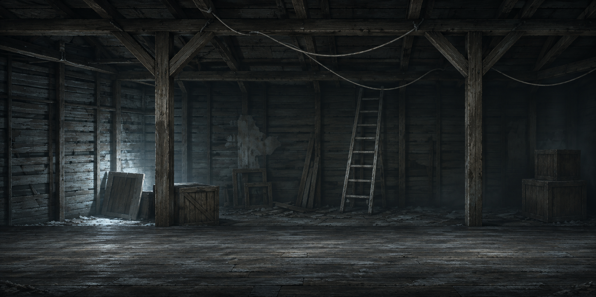

Décors · Vue unique
Maison d’hôtes — grenier du duel contre Mia
Resident Evil 7 biohazard (2017)
Candidat statique
1774 × 887 px · RGB
Références et limites
- Nouvelle composition latérale du lieu observé ; géométrie exacte 1:1 non certifiée.
- La largeur, la disposition des accessoires et la bande de combat sont adaptées.
- Master opaque unique : aucune séparation en six couches et aucune animation.
- Résolution native 1774×887 ; ni 4K ni cible 7680×2160 atteinte.
- Aucun import moteur, pivot, collision ou recette caméra validé.
- Les 21 masters annoncés V3/V4 ne sont pas récupérés ; absence historique totale non certifiée.
- Une scène Canvas originale R14 existe déjà pour cette identité ; ce PNG est un complément de référence, pas une nouvelle couverture d’animation.
Sources consultées
SHA-256 : 039d0b80ba0c11459f6366233c64218094b89b5e845bf4f1296d06aaf36de321
Rapport complet